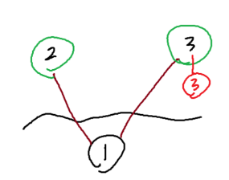
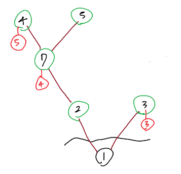
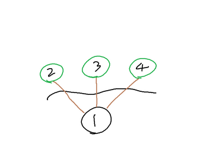
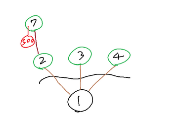

근성은 나무에 관심이 많다. 비록 지금은 코딩을 하고 있지만, 그렇다고 나무에 대한 애정이 식은 것은 아니다. 어느 날 이진 트리를 가지고 놀던 근성은 이진 트리는 나무임에도 열매가 안 열린다는 사실을 깨닫고 큰 충격에 빠졌다. 근성은 나무는 열매가 반드시 열려야 한다 생각하는 나무열매..(중략) 론을 밀고 있었기에 나무 열매가 열리는 트리 그래프를 만들었고 이에 "나무나무"라 이름 지었다.
나무나무의 특징은 다음과 같다.
트리를 만든 후 무엇을 할 수 있을까 고민하던 중 아래와 같은 두 가지를 생각해 냈다!
열매는 떨어트려도 나무나무의 특수한 힘으로 다음 쿼리 이전에 자라난다. 쿼리에 주어지는 수는 모두 정수이고, 올바른 입력임을 보장한다. 또한 수확쿼리는 1회 이상 주어진다.
그런데 근성은 이 쿼리를 만들다 갑자기 동아리방에 가야 한다며 도망쳤다. 여러분이 대신 풀어주자
첫째 줄에 최초 정점의 수 N개, 쿼리의 수 M이 주어진다. 최초의 정점에는 1 N 사이의 번호가 중복되지 않게 붙어있다. (2≤ N , M ≤ 100,000)
둘째 줄에 N개의 정점이 각각 몇 번 정점에서 나온 가지에 있는 것인지 주어진다. 1번은 뿌리이므로 -1이 주어진다. 모든 정점은 최종적으로 뿌리와 한 그래프에 속하지만, 입력 도중에는 속하지 않을 수 있다.
셋째 줄에 N개의 정점이 가지고 있는 열매의 무게가 주어진다. 0이라면 열매가 없는 것이고 뿌리는 열매를 가지지 않는다.
이후 넷째 줄부터 M개의 줄에 걸쳐 쿼리가 주어진다.
수확 쿼리가 들어올 때 몇의 힘으로 흔들어야 할지 출력한다. 단, 흔들어야 할 힘이 0이라면 -1을 출력한다.
3 7 -1 1 1 0 0 3 2 1 1 2 7 4 1 7 4 5 1 7 5 0 2 4 2 7 2 1
3 5 9 12
4 3 -1 1 1 1 0 0 0 0 2 1 1 2 7 500 2 1
-1 500
1번 예제 테스트 케이스를 봐보자


2번 예제를 봐보자

